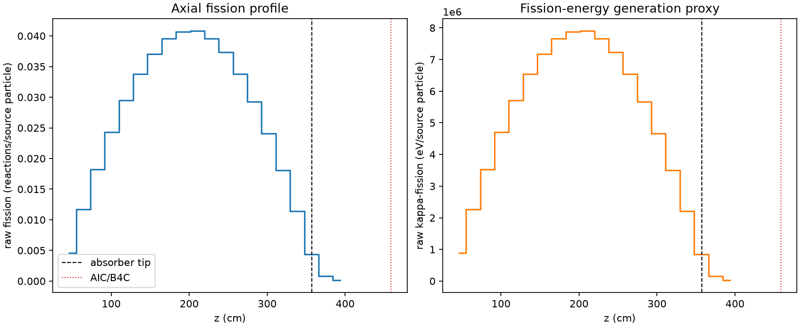
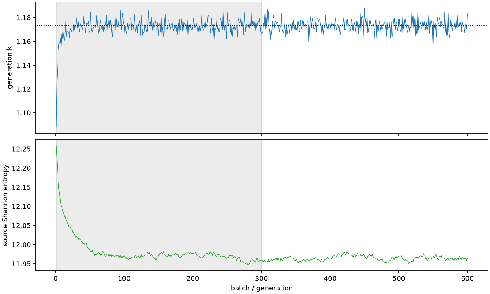

| field | value |
|---|---|
| experiment | V2-STAGE_128_OGRENCI_03-0018 |
| k | 1.1733674817128437 |
| MC standard error | 0.0001820442743718778 |
| seconds | 1033.478697573999 |
| acceptance | not_assessed |
| convergence | review_required |
Completed is output integrity only; physical and statistical review required. Zero tallies do not prove zero production or zero uncertainty.
| diagnostic | value |
|---|---|
| geometric fuel voxels | 5280 |
| zero fission tally voxels | 0 |
| low signal fuel voxels | 0 |
| low signal fission share | 0.0 |
| low signal kappa share | 0.0 |
| important fission share | 0.9500396084500746 |
| previous filter included | 5280 |
| duration estimate s | 1562.5173488400023 |
| actual minus estimate s | -529.0386512660034 |
| fission relative MC error | statistics |
|---|---|
| all_geometric_fuel | {"voxels": 5280, "positive_mean_voxels": 5280, "zero_mean_voxels": 0, "undefined_relative_error_voxels": 0, "median": 0.00959908178100703, "p95": 0.0631890880787338, "maximum": 0.16908887244288548} |
| low_signal | {"voxels": 0, "positive_mean_voxels": 0, "zero_mean_voxels": 0, "undefined_relative_error_voxels": 0, "median": null, "p95": null, "maximum": null} |
| important_95pct | {"voxels": 3896, "positive_mean_voxels": 3896, "zero_mean_voxels": 0, "undefined_relative_error_voxels": 0, "median": 0.00868623023503464, "p95": 0.013192543821914204, "maximum": 0.015684043318488064} |
| outside_previous_filter | {"voxels": 0, "positive_mean_voxels": 0, "zero_mean_voxels": 0, "undefined_relative_error_voxels": 0, "median": null, "p95": null, "maximum": null} |
| kappa_fission relative MC error | statistics |
|---|---|
| all_geometric_fuel | {"voxels": 5280, "positive_mean_voxels": 5280, "zero_mean_voxels": 0, "undefined_relative_error_voxels": 0, "median": 0.009588323987812475, "p95": 0.06309712170180153, "maximum": 0.1687196355298359} |
| low_signal | {"voxels": 0, "positive_mean_voxels": 0, "zero_mean_voxels": 0, "undefined_relative_error_voxels": 0, "median": null, "p95": null, "maximum": null} |
| important_95pct | {"voxels": 3896, "positive_mean_voxels": 3896, "zero_mean_voxels": 0, "undefined_relative_error_voxels": 0, "median": 0.008676367742112131, "p95": 0.013175409939657047, "maximum": 0.015668611727398443} |
| outside_previous_filter | {"voxels": 0, "positive_mean_voxels": 0, "zero_mean_voxels": 0, "undefined_relative_error_voxels": 0, "median": null, "p95": null, "maximum": null} |
| axial bin | fission share | kappa-fission share |
|---|---|---|
| 1 | 0.00958385000248416 | 0.009584295494981026 |
| 2 | 0.02437719673989196 | 0.02437717051077444 |
| 3 | 0.03802783467877505 | 0.038027614992729906 |
| 4 | 0.050710699227536286 | 0.05071046391108268 |
| 5 | 0.06164520747879667 | 0.061645075688677484 |
| 6 | 0.07055893770777004 | 0.07055873754538756 |
| 7 | 0.07733727461986079 | 0.07733733702742879 |
| 8 | 0.08261622698564398 | 0.08261606359650428 |
| 9 | 0.08488803862036903 | 0.08488790728818303 |
| 10 | 0.0851795375324098 | 0.08517931811860366 |
| 11 | 0.08261222911589212 | 0.0826120743688762 |
| 12 | 0.07802781383920467 | 0.07802766925121801 |
| 13 | 0.07059777193315044 | 0.07059768738303589 |
| 14 | 0.061058683490827804 | 0.06105850508740182 |
| 15 | 0.05022939973561112 | 0.050229179425405925 |
| 16 | 0.037668095871581556 | 0.037667966755347435 |
| 17 | 0.023870256523327867 | 0.023870212086575672 |
| 18 | 0.009087397448238265 | 0.009088275228122025 |
| 19 | 0.0016142878234565764 | 0.0016150168259260538 |
| 20 | 0.0003092606251718851 | 0.00030942941373795314 |
Histories include the inactive-to-active transition at batch 300. kappa-fission approximates fission energy production, not total heat deposition.

